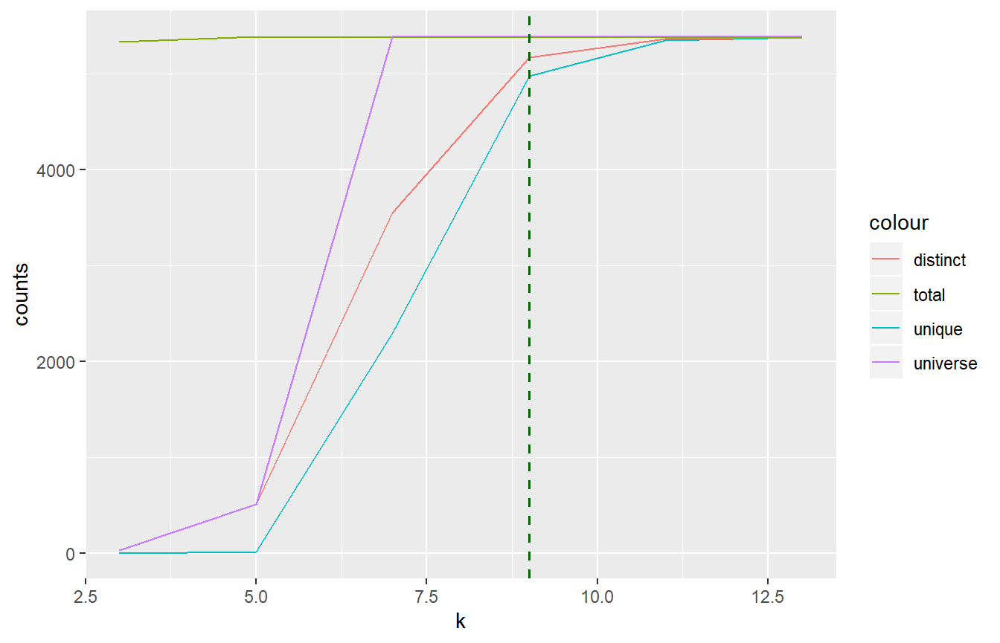

Basic.RmdWe are using simulated k-mer data from the phi-X174 genome.
Getting the data and setting parameters:
testthat::skip_on_cran()
testthat::skip_on_ci()
suppressPackageStartupMessages(
library(kmerize)
)
fq <- system.file("testdata/phix174-pe_w_err_5k_30q.fastq.gz",
package = "kmerize")
k <- 9
out_file <- file.path(tempdir(), "phwei11")
out_db <- paste0(out_file, c(".kmc_pre", ".kmc_suf"))Counting:
testthat::skip_on_cran()
testthat::skip_on_ci()
kmer_path = kmr_count(fq, out_file,
k = k,
f = "q" # file input format is fastq
)Convert to readable tabulated database:
testthat::skip_on_cran()
testthat::skip_on_ci()
kp <- kmr_write_tab(kmer_path)
kmers <- kmr_read_tab(kp)
head(kmers)
#> # A tibble: 6 x 2
#> kmer count
#> <chr> <dbl>
#> 1 AAAAAAAGT 27
#> 2 AAAAAACGT 37
#> 3 AAAAAAGCC 38
#> 4 AAAAAAGTT 27
#> 5 AAAAAATTT 52
#> 6 AAAAACATT 25# Getting the DNA
testthat::skip_on_cran()
testthat::skip_on_ci()
fp <- system.file("testdata/phix174.fasta",
package = "kmerize")
dna <- Biostrings::readDNAStringSet(fp)
k <- as.integer(seq(3, 25, 2)) # currently k explicitly as integer sequence
res <- kmr_response(fp, k, fmt = "m")
#> 5
#> 7
#> 9
#> 11
#> 13
res
#> k unique distinct total universe
#> 1 3 0 32 5328 32
#> 2 5 10 506 5382 512
#> 3 7 2295 3547 5380 8192
#> 4 9 4972 5170 5378 131072
#> 5 11 5346 5361 5376 2097152
#> 6 13 5374 5374 5374 33554432testthat::skip_on_cran()
testthat::skip_on_ci()
kmr_plot_response(res, ref_k = 9, max_y = Biostrings::width(dna))
tbl <- table(kmers$count)